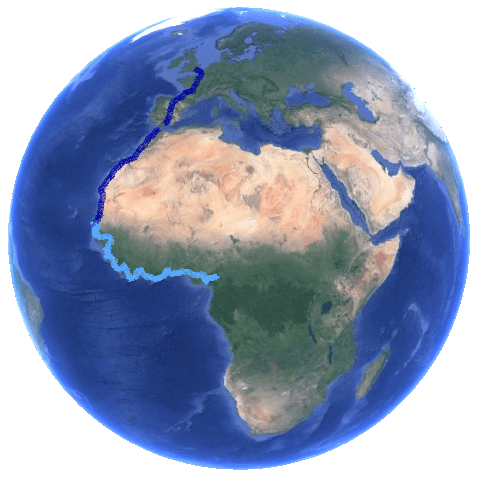
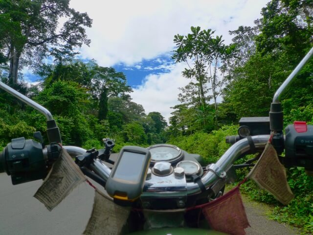
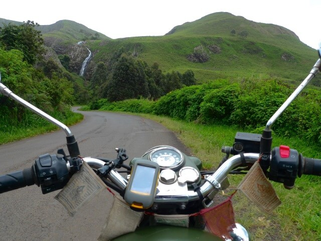
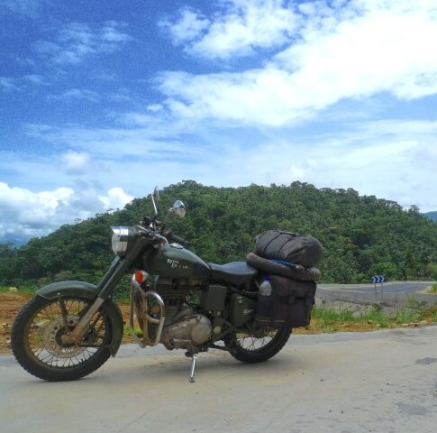
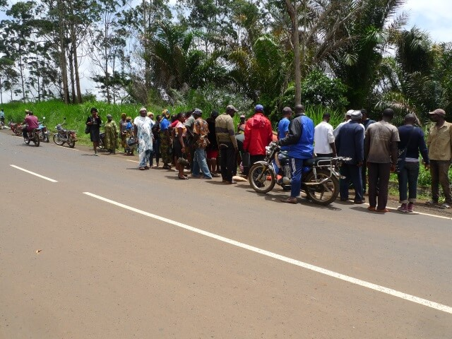

Cameroon, AFRICA
Return of the 'Mac
(3 minute read)
...back on 'mac! Shit yeah!!...
I wake up to a cool, fresh morning.
There’s a crisp edge to the air, which is like a tonic after the wet, stifling, draining humidity.
Conditions don’t come better...
The "N6" is deadset glorious.
Absolutely immaculate.
The white paint on the road markings doesn't look like it's dried yet.
Photo-shoot-fresh.
After yesterday’s mud bath in the heat, this is exactly what I need.
I’ve got it all to myself.
I'm happy as a pig in shit. It really doesn't get any better than this...
Black underneath, light green on the sides and a "Toy Story" white and blue backdrop overhead.
There are butterflies everywhere. In places the sky is thick with the colour of them.
It’s fucking gorgeous.
If I was a painter, I’d paint this.
Riding along at eighty though, the thickness of the butterflies can quickly turn into a colourful armageddon...
"Sorry-sorry-sorry...!"
This road is alive. It’s moving constantly under the wheels as we undulate up and down and around the hills and mountains.
The bike is singing to me, music in my ears. I’m singing too; "Return Of The 'Mac", and grinning like a maniac.
I can’t help it.
If there's a better sound than an Enfield chewing up a gradient, I'm yet to hear it...
My spontaneous happiness is mirrored in the spontaneous, easy happiness of the Cameroonians, and as I chug through the small roadside villages there’s always a big white smile and a friendly wave to reflect mine.
This place... Magnificent.
This bike... Perfect.
I'm in love.
This is what it’s all about - The bike of my dreams through the mountains of Cameroon... Cameroon! Who the fuck gets to do this??
If for nothing else other than this day, this moment, it’s all been worth it.
The dense rainforest starts to give way to a sort of a balding process, and the dark green trees give out to a grasslands.
Have we put on some altitude then? Must have...
I’m coming out of another friendly small village when I notice three or four women on the side of the road up ahead doing some sort of wild rain dance around an old car wreck.
This is new...
They’re flinging their arms around in the air with stick brushes. Dancing about and making a hell of a lot of noise. Wailing away.
A dance of remembrance?
The car’s on its roof, off the side of the road and down a small embankment. Off a mini cliff. Old, rusted pile of shit.
I see someone getting pulled out of one of the windows...
Holy fuck!
I feel my face and back fizz with a dump of adrenaline, and steel myself to witness some gnarly shit.
I don't know if I can...
I must've missed the crash by nothing... Seconds...
I bring the Enfield to a diving stop, bounce out of the saddle and run over to the upside down car.
There are three old ladies lying on the road.
They aren't mangled up - like I was expecting - but they also aren't moving about a bunch either...
I don't want anything to do with it... Not this time. Not again.
I run away.
I flee, like a coward, again...
I try to convince myself that I'm running back to the village for help. I have a vague instinct that there was a hospital back there... I feel like I saw one... Maybe... Probably bullshit. The things we tell ourselves...
I vault onto the Enfield, hammer the ignition and fly back to the village.
Sure enough, about a half a click back up the road is a small village hospital.
I luck out, again...
I run through the doors, yelling. Adrenaline fuelled hysteria. Running up and down the halls, screaming at the top of my lungs for help.
Nurses and doctors come out of the woodwork.
The nurses are moving quickly with a sense of purpose; like a scene out of "ER", holding stethoscopes around their necks and running down the hallway and out the door.
The doctors want to wait for a bus...
A bus???
"It's just up the road! It’s right there! People are hurt, could be dead!! What the fuck is the matter with you??" I try to create some sense of urgency, but the doctors don’t seem to give a shit.
With nothing left to do I jump back on the bike and rush back to the wreck, overtaking running nurses as I go...
In the time I’ve been away a big mob has formed.
I push my way to the front, where everything’s happening.
Everyone's just a bit shaken up.
That’s it... No one's dead. No one's even hurt.
Unbelievable.
I feel a little sheepish for having panicked - badly.
I'm so embarrassed for making a fuss that I'm blushing.
I hurry back to the bike and peel the fuck out of there.
Whoops...
What the fuck was I supposed to do when I see a car that’s flipped onto its roof and people are getting pulled out of the wreck???
Shit.
I quickly forget about it, and go back to enjoying the superb ride.
Cameroon. Take a fucking bow. Straight to the top echelon with you...
Top Shelf.